숫자로 본 만약
만약 전부 보기


유명인 대결
대결
대결 전부 보기이슈 숫자
지난 글모든 글
분류별 보기- 만약 모든 물건 값이 매일 1%씩 오른다면?만약 ·
- 밤길이 안전하다는 사람, 남자 10명 중 8~9명·여자 6명가족·사회 ·
- 르브론을 개미 크기로 줄이면 몇 cm 뛸까?유명인 ·
- 만약 바다가 매일 1m씩 차오른다면?만약 ·
- 휴대폰 스팸, 한 달 10.35통에서 8.52통으로디지털·크리에이터 ·
- 만약 하루가 매일 10분씩 길어진다면?만약 ·
- 블로그에 적게 나와도 사람은 많아요생활·건강 ·
- 30대 초반 10명 중 3명, 부모님 집에 살아요가족·사회 ·
- 만약 모든 사람 키가 매일 1cm씩 자란다면?만약 ·
- 집안일 반반 나눈다는 30대 부부, 10년 새 두 배가족·사회 ·
- 올겨울 축제 달력 한 장생활·건강 ·
- 만약 한국이 매일 10km씩 남쪽으로 간다면?만약 ·
- '결혼은 해야 한다'는 20·30대, 2년 새 늘었어요가족·사회 ·

- 만약 중력이 매일 1%씩 약해진다면?만약 ·
- 하루 게임 시간 평균 21분, 그런데 하는 사람만 보면 2시간 38분디지털·크리에이터 ·
- 30대 평균 월급 397만 원, 그런데 한가운데는 348만 원일·이직 ·
- 스드메는 월급 몇 달치일까돈·자산 ·

- 한국 남자, 80.8년 중 몇 년을 아프며 살까생활·건강 ·
- 집 가진 가구, 30대는 10가구 중 몇일까돈·자산 ·
- 지하철 vs 버스, 서울 사람은 뭘 더 많이 탈까대결 ·
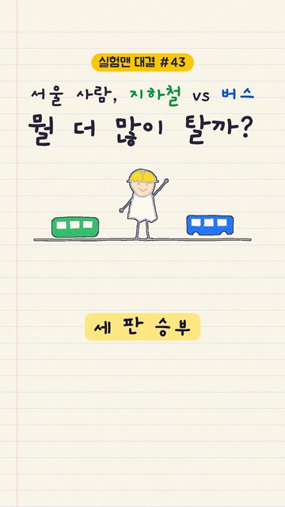
- '혼영' 많다는데, 영화 본 사람 중 혼자 본 사람이 10% 넘을까?대결 ·
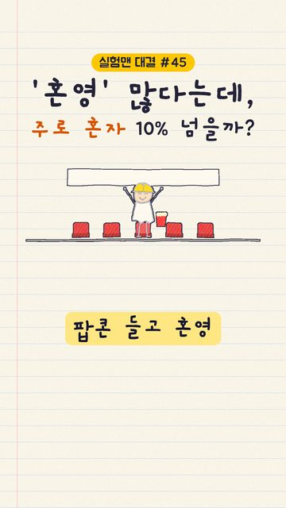
- 한 해 손님의 절반 넘게 겨울에 오는 군이 있어요. 어디일까?생활·건강 ·
- 쌀 생산이 또 줄었어요. 한 사람이 먹는 쌀은 얼마나 줄었을까?생활·건강 ·
- 겨울에 손님이 느는 관광지, 스키장 말고는 어디일까생활·건강 ·
- 산타가 하룻밤에 442만 가구를 돌면, 한 집에 몇 초?가족·사회 ·
- 한국인은 평생 몇 년을 잘까?생활·건강 ·
- 봉지라면 vs 컵라면, 한국에서 더 많이 팔리는 쪽은?돈·자산 ·
- 올해 김장 재료값, 작년보다 오를까 내릴까?돈·자산 ·
- 실험맨, 사 온 커피값이 밖에서 먹는 밥값의 5%를 넘을까?대결 ·
- 수능 날, 숫자로 보면가족·사회 ·
지난 글 167편 더 보기
- 직장 인생 상식 여섯 개, 데이터로 채점하면?일·이직 ·
- 실험맨이 1년 동안 사 먹는 밥값(배달 포함)으로 최신 스마트폰을 살 수 있을까대결 ·
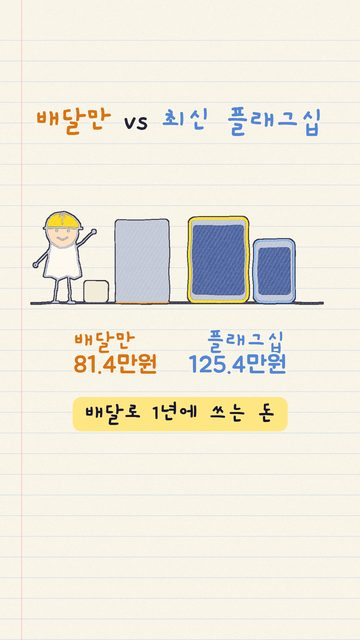
- 20대 여성 vs 65세 이상 남성 실험맨, 하루 운동은 누가 더 많이 할까대결 ·
- 짜장면 vs 치킨, 값이 더 많이 오른 국민 음식은 어느 쪽일까대결 ·
- 실험맨, 결혼하면 뭐가 달라질까가족·사회 ·
- 실험맨의 1년, 출퇴근에 쓰는 시간이 연차 휴가보다 길까대결 ·
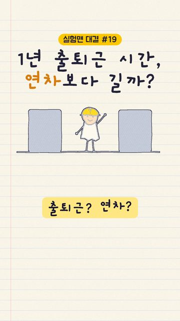
- 경복궁 vs 에버랜드, 1년에 사람이 더 많이 찾는 곳은 어디일까대결 ·
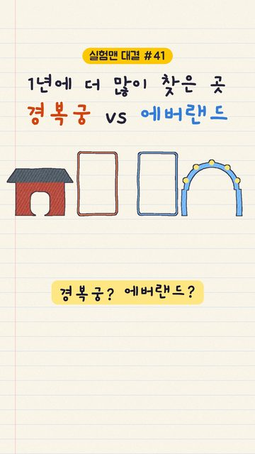
- 마라톤 세계기록 vs 서울 시내버스, 누가 더 빠를까대결 ·
- 실험맨 혼자 1년 쓴 수돗물로 25m 수영장 레인 한 줄을 채울 수 있을까대결 ·
- 실험맨 vs 고양이, 하루 씻고 꾸미는 시간은 누가 더 길까대결 ·
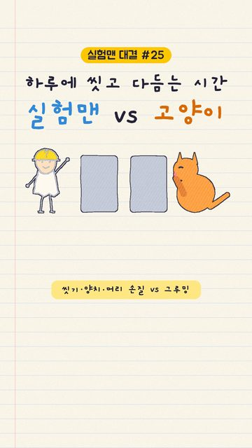
- 고3 실험맨 vs 기린, 하루에 누가 더 적게 잘까대결 ·
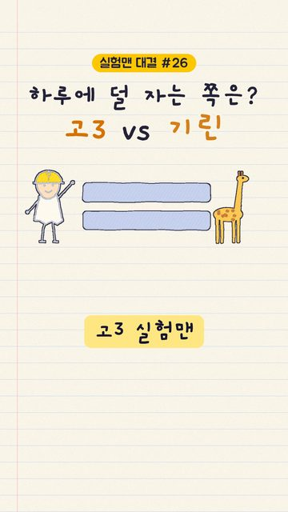
- 60세 이상 여성 vs 20대 여성 실험맨, 하루 사람을 만나 어울리는 시간은 누가 더 길까대결 ·
- 50대 남성 실험맨, 저녁을 가족과 함께 먹는 사람이 절반을 넘을까대결 ·
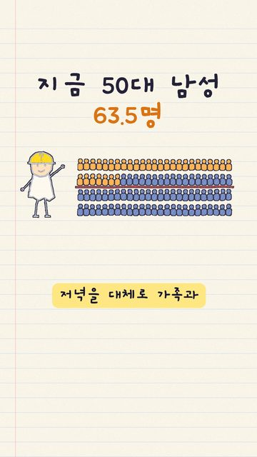
- 서울에 혼자 사는 20대 여성 실험맨, 작은 오피스텔 월세가 월급의 3분의 1을 넘을까대결 ·
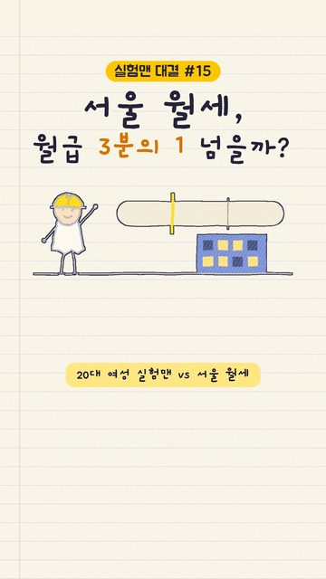
- 30대 신혼부부 실험맨, 둘이 석 달 벌면 결혼식 하루 비용을 낼 수 있을까대결 ·
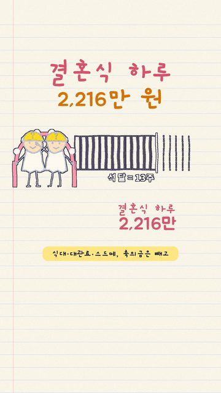
- 30대 여성 실험맨의 1년 집안일, 돈으로 바꾸면 1년 번 돈보다 클까대결 ·
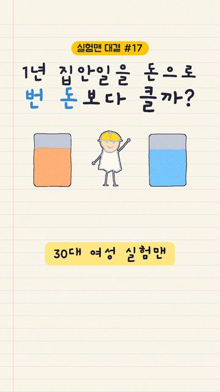
- 20대 여성 실험맨의 1년 영상·SNS 시간, 최저시급으로 치면 대학 등록금을 넘을까대결 ·
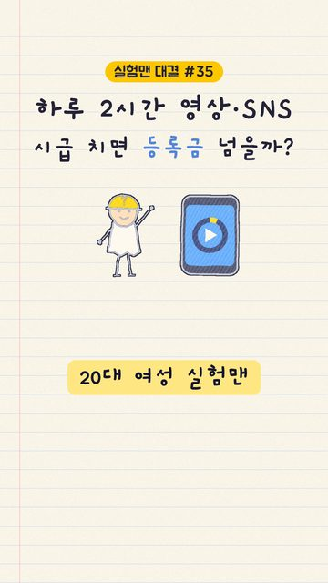
- 실험맨의 평생 영수증가족·사회 ·
- 실험맨 vs 코알라, 가만히 있기 세 판 승부는 누가 이길까대결 ·
- 평균 한국인이 1년 동안 마시는 우유, 젖소 한 마리는 하루면 짤 수 있을까대결 ·
- 실험맨이 1년 동안 버리는 쓰레기, 자기 몸무게의 5배를 넘을까대결 ·
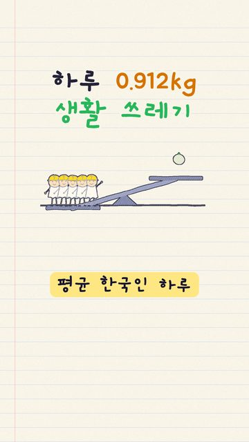
- 실험맨 vs 집고양이, 50m 달리기를 하면 누가 이길까대결 ·
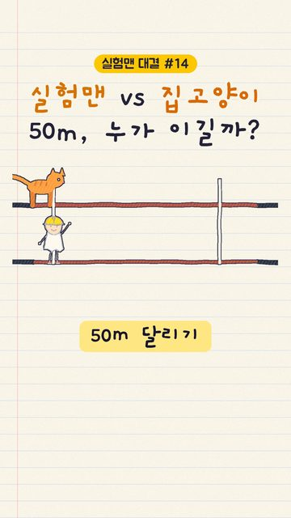
- 평균 한국인이 1년 동안 걷는 거리로 서울~부산을 왕복할 수 있을까대결 ·
- 대한민국이 100명이 사는 마을이라면가족·사회 ·
- 한국인은 스마트폰 보는 시간이 더 길까, 밥 먹는 시간이 더 길까대결 ·
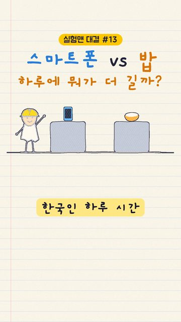
- 30대에게 커피는 다른 음료를 다 합친 것보다 많을까대결 ·
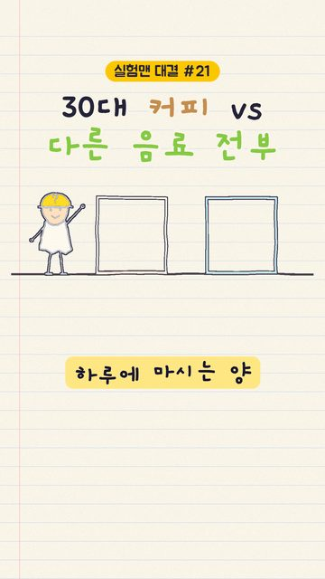
- 우리나라에서 하루에 결혼하는 커플과 이혼하는 커플, 몇 배 차이일까대결 ·
- 한국에서 로또 1등 되기 vs 벼락 맞기, 뭐가 더 흔할까대결 ·
- 한국에서 키우는 개가 많을까, 고양이가 많을까대결 ·
- 한국에 카페, 치킨집, 편의점 중 뭐가 제일 많을까대결 ·
- 한국인이 1년에 쓰는 화장지를 이으면 지구 몇 바퀴일까대결 ·
- 우리나라에는 문이 많을까, 바퀴가 많을까대결 ·
- 수컷 고릴라 1마리는 한국 남자 몇 명분일까대결 ·
- 한국인이 평생 먹는 치킨 값이면, 중형차를 살 수 있을까대결 ·
- 사자 vs 호랑이, 싸움 말고 능력으로 겨루면 누가 이길까대결 ·
- 서울 집 앞에서 부산 집 앞까지, KTX와 비행기 중 뭐가 더 빠를까대결 ·
- 아파트 5층에 살면, 엘리베이터와 계단 중 뭐가 더 빠를까대결 ·
- 지구의 개미 전부 vs 사람 전부, 어느 쪽이 더 무거울까대결 ·
- 죽음을 각오한 할머니 30명 vs 감기 걸린 마이크 타이슨, 누가 이길까대결 ·
- 100m 달리기, 우사인 볼트가 50m 앞에서 출발하면 치타를 이길까대결 ·
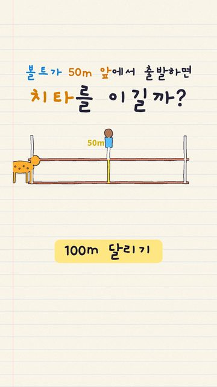
- 비 올 때 뛰면 덜 젖을까, 걸으면 덜 젖을까대결 ·
- 타이슨 vs 방망이 든 오타니, 둘 다 최선이면 오타니 승대결 ·
- 잭슨 vs 호날두, 4판 2승 2패로 비겼어요대결 ·
- 원/달러 환율, 20년 중 높은 편이지만 6월보다 189.6원 낮아요돈·자산 ·
- 다문화 결혼은 51건 줄고, 이혼은 112건 늘었어요가족·사회 ·
- 청년 취업자가 줄었다는데, 20대 후반은 1년 전만큼 일해요일·이직 ·
- 개발자는 그대로인데, 신입 자리만 줄었어요일·이직 ·
- 음악 앱 가입은 줄었는데, 20대는 아직 셋 중 둘이 써요디지털·크리에이터 ·
- 소프트웨어 회사 다니면 다 개발자일까요?디지털·크리에이터 ·
- 실업률엔 안 잡히는 청년, 실업자의 두 배가 더 있어요일·이직 ·
- 일하는 19~54세 여성, 둘 중 하나는 이미 일에 AI를 써요일·이직 ·
- 크리에이터 업체가 버는 돈, 절반 넘게가 광고예요창업·자영업 ·
- 개발 업계 20대 일자리, 3년 새 넷 중 하나가 없어졌어요일·이직 ·
- OTT에 쓰는 돈, 30대는 70세 이상의 열 배예요디지털·크리에이터 ·
- 물가 오름폭은 2~3%대인데, 기름값은 크게 뛰었어요돈·자산 ·
- 그냥 쉬는 청년, 셋 중 하나는 '원하는 일자리 찾기 어려워서'라고 해요일·이직 ·
- 일하는 한국 여성, 이제 OECD 평균 바로 아래까지 왔어요일·이직 ·
- 가계 재산, 땅·건물 비중은 줄고 예금·주식이 커졌어요돈·자산 ·
- 새로 받는 주택담보대출 금리, 2015년 이후 가장 높아요돈·자산 ·
- 유튜브에선 크리에이터를, SNS에선 친구를 따라요디지털·크리에이터 ·
- 가계 빚, 2021년보다 줄었지만 여전히 1년 소득의 1.7배예요돈·자산 ·
- 임금을 적게 받는 사람은 줄었는데, OECD 평균보다는 많아요일·이직 ·
- 남녀 임금 격차, 줄긴 했는데 OECD에선 여전히 가장 커요일·이직 ·
- 물가를 맞추면 한국 평균 연봉은 OECD 몇 번째일까요?일·이직 ·
- 한국은 아직 오래 일하지만, OECD와의 차이는 많이 줄었어요일·이직 ·
- 한국 최저임금, 24년 새 OECD에서 가장 많이 올랐어요일·이직 ·
- 국내 게임 매출, 절반 넘게는 휴대폰에서 나와요디지털·크리에이터 ·
- 한국 가계는 번 돈에서 얼마나 저축할까요?돈·자산 ·
- 스스로 회사를 그만두는 사람, 늘었을까요?일·이직 ·
- 우리 집 통신비, 몇 년째 한 달 12만 원 안팎이에요디지털·크리에이터 ·
- 카드 한 번 긁을 때 쓰는 돈, 20년 전의 절반도 안 돼요돈·자산 ·
- 근로장려금 받는 집, 30세 미만이 가장 많아요일·이직 ·
- 광고비가 TV에서 휴대폰 화면으로 넘어갔어요디지털·크리에이터 ·
- 생성형 AI 쓰는 사람 열에 하나만 챗GPT에 돈을 내 봤어요디지털·크리에이터 ·
- 해외직구, 어느 나라에서 제일 많이 살까요?돈·자산 ·
- 아빠 육아휴직, 처음으로 두 자릿수가 됐어요가족·사회 ·
- 실업급여, 정말 해마다 최대일까요?일·이직 ·
- 작은 회사에 다닐수록 퇴직연금이 없어요일·이직 ·
- 문 닫는 사업자는 10여 년 새 늘었는데, 닫는 비율은 내려갔어요창업·자영업 ·
- 남자 비만은 두 배 가까이 됐는데, 여자는 제자리예요생활·건강 ·
- 전자담배까지 세면, 남자 흡연은 덜 줄었어요생활·건강 ·
- 다시 일하려는 사람, 열에 셋은 월 300만 원 이상을 바라요일·이직 ·
- 한 사람 진료비, 2000년의 8배가 됐어요생활·건강 ·
- 요즘 첫아이 낳는 나이, 예전 셋째 낳던 나이보다 많아요가족·사회 ·
- 이혼은 줄었는데, 오래 같이 산 부부의 이혼 비중은 커졌어요가족·사회 ·
- 휴학은 늘었는데, 4년제 졸업까지 걸리는 시간은 그대로예요일·이직 ·
- 유연근무 하는 사람은 늘고, 재택은 코로나 때보다 줄었어요일·이직 ·
- 연금 받는 여자, 절반 넘게 한 달 50만 원이 안 돼요돈·자산 ·
- 새로 사업 시작한 사람 열에 일곱, 준비는 반년도 안 됐어요창업·자영업 ·
- 숏폼은 아직 숏츠가 1등, 릴스를 켜는 사람은 두 배가 넘었어요디지털·크리에이터 ·
- 스마트폰 과의존 위험, 전체는 줄었는데 10대·20대는 늘었어요디지털·크리에이터 ·
- 집 가진 가구는 늘었는데, 30대 가구는 6년째 줄었어요돈·자산 ·
- 새 일자리를 얻은 사람, 2017년 이후 가장 적었어요일·이직 ·
- 쓰고 남는 돈, 비율로는 60대 집이 가장 커요돈·자산 ·
- 아이 없는 신혼부부는 늘었는데, 1년차는 줄었어요가족·사회 ·
- 외국인이 많이 왔는데, 나간 한국인은 더 많았어요생활·건강 ·
- 비정규직 월급은 정규직의 절반일까요? 시간제를 빼면 4분의 3이에요일·이직 ·
- 일하는 65세 이상이 일하는 20대보다 많아졌어요일·이직 ·
- 회사를 새로 여는 비율도 닫는 비율도, 통계가 생긴 뒤 가장 낮아요창업·자영업 ·
- 요즘 사람들, 정말 이사를 덜 다닐까요가족·사회 ·
- 배우자 있는 남녀 집안일 시간, 25년 새 차이가 100분 줄었어요가족·사회 ·
- 소득 순위, 1년 새 자리를 바꾼 사람이 7년 중 가장 적었어요돈·자산 ·
- 20대 이주배경인구, 열어 보니 대부분 외국인이었어요가족·사회 ·
- 생성형 AI, 30대는 셋 중 둘 가까이 써 봤어요디지털·크리에이터 ·
- 휘발유랑 경유, 요즘은 값 차이가 거의 없어요돈·자산 ·
- 요즘 빨리 오르는 건 밥값보다 서비스 요금이에요돈·자산 ·
- 출생아, 1년 전보다 많은 달이 2년 넘게 이어지고 있어요가족·사회 ·
- 줄어든 청년 취업자, 넷 중 셋은 인구가 줄어서였어요일·이직 ·
- 영화관 가는 사람, 아직 코로나 전으로 못 돌아왔어요생활·건강 ·
- 사교육 받는 학생은 줄었는데, 받는 학생한테 드는 돈은 늘었어요돈·자산 ·
- 주 54시간 넘게 일하던 사람, 이제 열에 하나도 안 돼요일·이직 ·
- 비정규직 고용보험은 정규직 쪽으로 다가갔는데, 국민연금은 멀어졌어요일·이직 ·
- 가장 오래 다닌 직장, 몇 살에 그만뒀을까요일·이직 ·
- 나이 들어도 일하고 싶다는 사람, 몇 살까지일까요?일·이직 ·
- 청년 첫 직장, 아는 사람 소개보다 시험으로 들어가요일·이직 ·
- 첫 월급 200만 원, 이제 청년 둘 중 하나는 넘어요일·이직 ·
- 시험 준비하는 청년, 이제 공무원보다 기업 쪽이 많아요일·이직 ·
- 노력하면 올라갈 수 있다는 사람, 20대에서 가장 많이 늘었어요돈·자산 ·
- 빚이 늘었다고 답한 집, 2011년 이후 가장 적었어요돈·자산 ·
- 부모 노후는 다 함께 돌보자는데, 생활비는 부모가 대요돈·자산 ·
- 우울할 때 이야기할 사람, 예전만큼 있을까요?가족·사회 ·
- 현금으로 기부하는 사람, 줄다가 다시 조금 늘었어요가족·사회 ·
- 배우는 어른은 늘었는데, 일 때문에 배우는 사람은 줄었어요일·이직 ·
- 반려동물 한 마리, 한 달에 얼마 들까요돈·자산 ·
- 20대에선 술 많이 마시는 여자와 남자가 비슷해졌어요생활·건강 ·
- SW 인력 더 뽑겠다는 곳, 큰 회사일수록 많았어요디지털·크리에이터 ·
- '결혼은 해야 한다'는 사람, 줄었다가 다시 절반을 넘었어요가족·사회 ·
- 연차를 5일도 못 쓰던 사람, 이제 드물어요일·이직 ·
- 유튜브 보는 100명 중 채널 주인은 3명이에요디지털·크리에이터 ·
- 주로 쓰는 SNS 하나만 꼽으라니, 절반 가까이가 인스타그램이었어요디지털·크리에이터 ·
- 혼자 사는 비율, 20대 후반과 85세 이상이 거의 같아요가족·사회 ·
- 내 소득에 만족한다는 사람, 14년 새 두 배 넘게 늘었어요돈·자산 ·
- 직장 잃을까 불안한 사람, 15년 내내 절반이 넘어요일·이직 ·
- '일이 먼저'라는 사람, 20대에서 가장 많이 줄었어요일·이직 ·
- 노후 준비, 60세 이상은 늘었고 20대는 줄었어요돈·자산 ·
- 주말엔 그냥 쉰다는 사람, 10년 새 크게 늘었어요생활·건강 ·
- 일자리 만족은 15년 새 늘었고, 불만이 가장 많은 건 월급이에요일·이직 ·
- 공대 나오면 취업 잘 된다, 지금도 그럴까요일·이직 ·
- 스트레스 많다는 사람, 30·40대에서 가장 많아요생활·건강 ·
- 20대 비정규직 비율은 올랐는데, 비정규직 수는 그대로예요일·이직 ·
- 20대는 줄었는데, '그냥 쉬었다'는 20대는 늘었어요일·이직 ·
- 온라인쇼핑, 이제 대부분 휴대폰으로 해요돈·자산 ·
- 20대는 아이폰을 얼마나 쓸까요? 조사마다 답이 크게 달라요디지털·크리에이터 ·
- 직업 고를 때 가장 먼저 보는 것, 15년 동안 바뀌었을까요일·이직 ·
- 해외여행 다녀온 사람, 코로나 전보다 많아졌어요생활·건강 ·
- 주 1회 운동하는 사람, 정말 늘었을까요생활·건강 ·
- 책 읽는 어른은 줄었는데, 20대 이하는 그대로예요생활·건강 ·
- 20년 다닌 일자리 월소득, 1년 안 된 자리의 네 배예요일·이직 ·
- 새로 사업자를 내는 30세 미만, 절반 넘게 온라인 판매예요창업·자영업 ·
- 대기업과 중소기업 월급, 배수는 줄었는데 금액 차이는 커졌어요일·이직 ·
- 크리에이터와 회사, 수익은 어떻게 나눌까요디지털·크리에이터 ·
- 20대가 하루에 영상 보는 시간, 5년 새 두 배가 넘었어요디지털·크리에이터 ·
- 혼자 사는 집, 어디에 돈을 더 쓰게 됐을까요?돈·자산 ·
- 취미로 사진 찍는 사람, 2019년보다 줄었어요생활·건강 ·
- 개발자 뽑겠다는 자리, 3년 새 셋 중 하나가 사라졌어요디지털·크리에이터 ·
- 첫 직장을 그만둔 이유, '계약이 끝나서'가 두 번째가 됐어요일·이직 ·
- 빚 빼고 남은 재산, 8년 새 30대 가구가 가장 덜 늘었어요돈·자산 ·
- 새로 생긴 기업, 5년 뒤까지 남는 건 셋 중 하나 남짓이에요창업·자영업 ·
- 일하는 시간은 줄었는데, 출퇴근 시간은 그대로예요일·이직 ·
- 10년 전 1만 원 장바구니, 지금은 얼마일까요돈·자산 ·
- 들어간 지 1년 안 된 회사, 1년 뒤엔 절반도 안 남아요일·이직 ·
- 개발자 10년 차 월급, 신입의 두 배가 넘어요디지털·크리에이터 ·
- 휴대폰 말고 카메라 있는 집, 이제 100집에 7집디지털·크리에이터 ·
- 유튜버 평균 수입은 왜 923만 원도 되고 7,100만 원도 될까요디지털·크리에이터 ·
- 이직하면 월급이 오를까요? 8년 중 가장 덜 올랐어요일·이직 ·
- 서울 구 대부분, 20대만 들어오고 다른 나이는 나갔어요가족·사회 ·
- 서울에서 사람은 빠져나갔는데, 20대는 들어왔어요가족·사회 ·